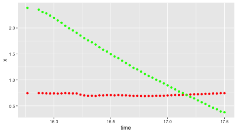
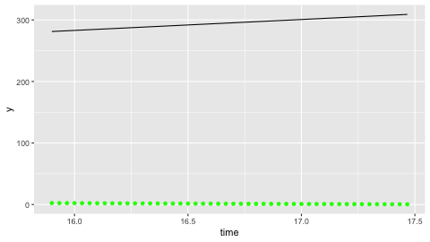

Backlinks
Table of Contents
Nove

A thing pushes through a thing! How much influences does the air give it.
1 Factors of Influence
- Cross-sectional/projected surface area
- Velocity — some kind of
- Shape of the object
When we talk about drag, we are talking a force.
2 Drag Force
\begin{equation}
F_{drag} = \frac{1}{2} C A \rho v^2
\end{equation}
Where…
- \(C\) is the drag coefficient, describing the shape of the object
- \(A\) is the projected area being pushed though
- \(\rho\) is the mass density of the object
- \(v\) is the velocity of travel
By default, atmospheric pressure makes it so that there is equal amounts of pressure up and down.
3 Analysis of the Curve
library(tidyverse)
falldata <- read.csv("./falldata.csv", stringsAsFactors = TRUE)
head(falldata)
15.7666666667 0.744754495697 2.38654750623 0.00118434586778 -0.472766141311 15.8666666667 0.7458223158 2.3527575824 -0.0125149651894 -0.631378632933 15.9 0.744549708279 2.30732403114 -0.0469877455697 -0.921693908128 15.9333106576 0.741112205206 2.28080406062 -0.0553661266199 -1.05377203968 15.9666666667 0.739400767505 2.23921758726 -0.0238090877977 -1.2517487939 16 0.740936673134 2.19571488879 -0.0157900706024 -1.37188339643
Let's plot the basic information first!
plot <- ggplot(falldata) + geom_point(aes(x=time, y=x), color="red") + geom_point(aes(x=time, y=y), color="green") plot

We could see that, after just about four points, the graph is pretty much linear. Se we split the data into two pieces.
data_quadratic <- falldata[0:4,] data_linear <- falldata[4:nrow(falldata)-1,]
Let's fit the line first by performing a linear regression.
regression = lm(time~y, data = data_linear) regression
Call:
lm(formula = time ~ y, data = data_linear)
Coefficients:
(Intercept) y
17.7334 -0.8073
Furthermore, we also get a summary of how good this fit is.
summary(regression)
Call:
lm(formula = time ~ y, data = data_linear)
Residuals:
Min 1Q Median 3Q Max
-0.039309 -0.023095 -0.007461 0.023235 0.049528
Coefficients:
Estimate Std. Error t value Pr(>|t|)
(Intercept) 17.733354 0.009531 1860.5 <2e-16 ***
y -0.807258 0.006709 -120.3 <2e-16 ***
---
Signif. codes: 0 ‘***’ 0.001 ‘**’ 0.01 ‘*’ 0.05 ‘.’ 0.1 ‘ ’ 1
Residual standard error: 0.02655 on 46 degrees of freedom
Multiple R-squared: 0.9968, Adjusted R-squared: 0.9968
F-statistic: 1.448e+04 on 1 and 46 DF, p-value: < 2.2e-16
Lastly, we plot the information + overlaid:
plot <- ggplot(data_linear) + geom_point(aes(x=time, y=y), color="green") + geom_function(fun=(function (x) 17.7334*x - 0.8073), color="black") plot

| Research World |